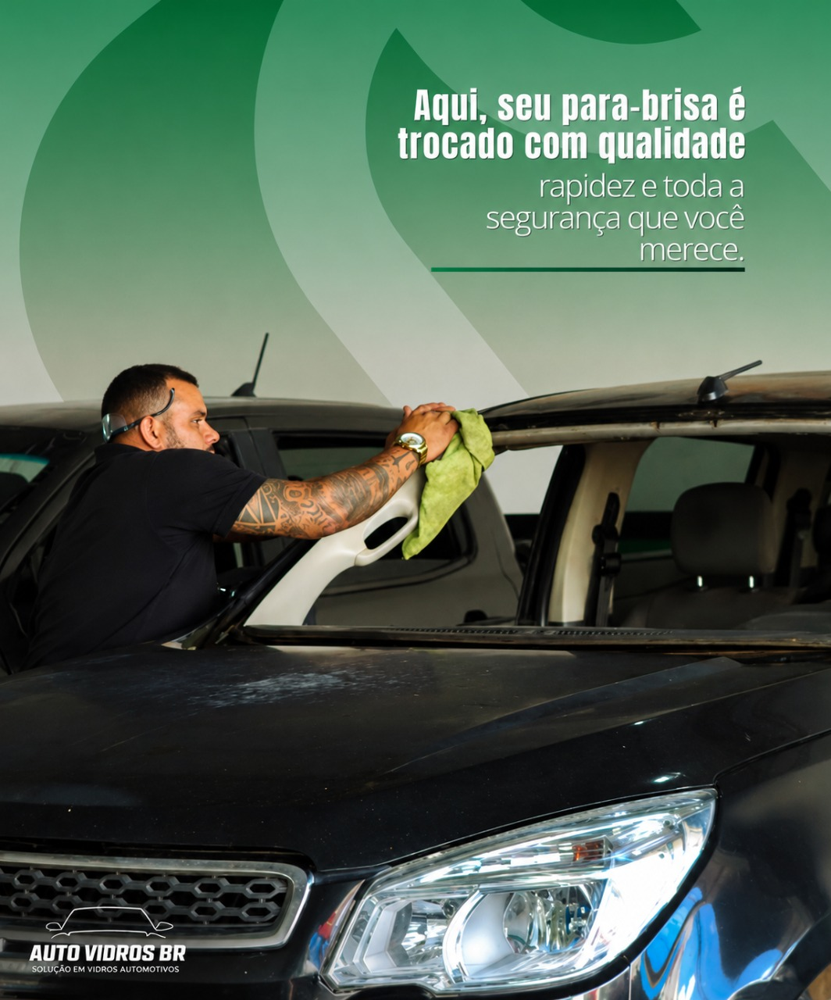
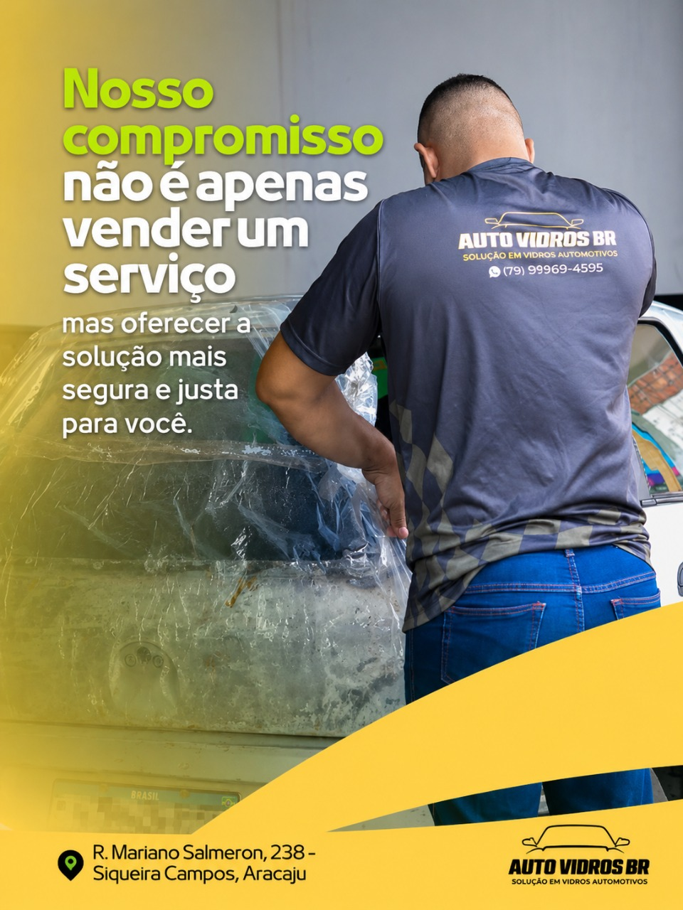
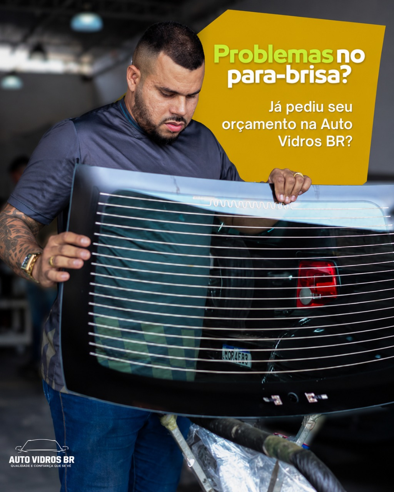
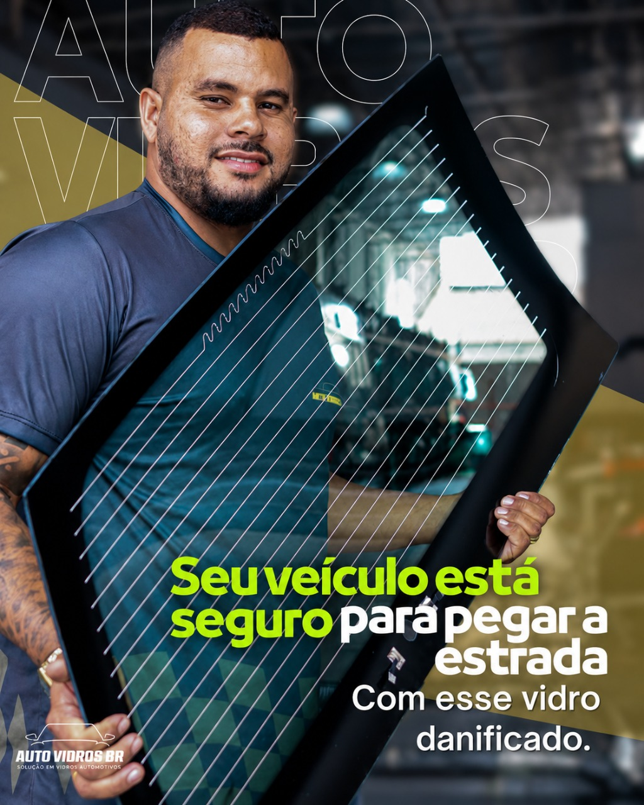
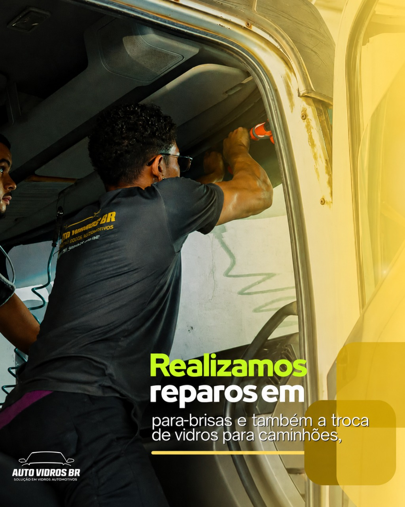
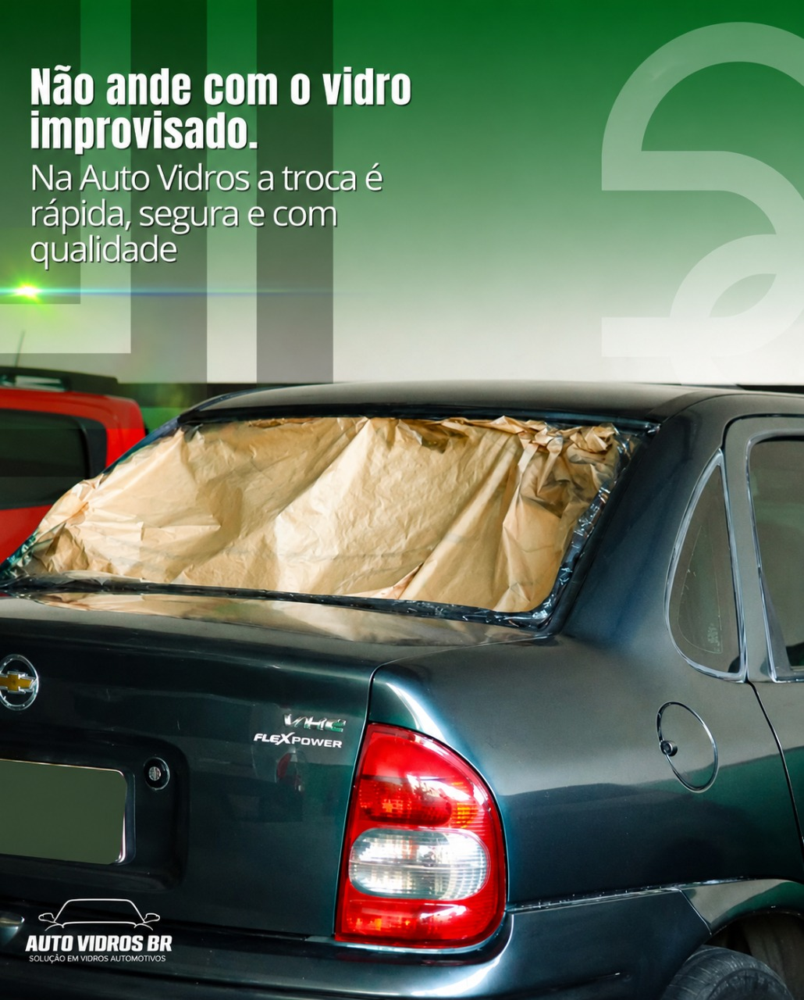
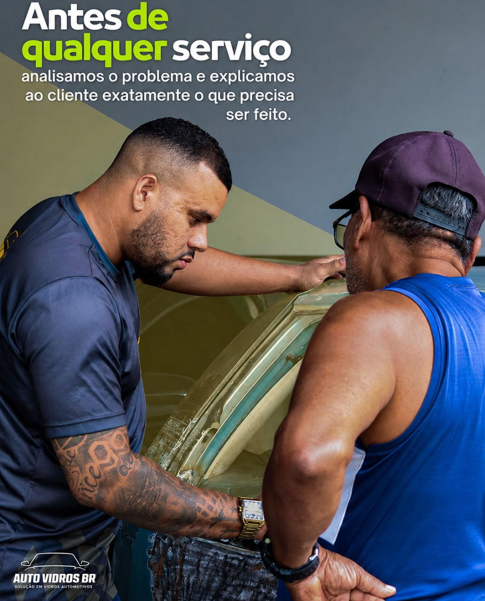

Auto Vidros BR em Aracaju
Para-brisa e vidros automotivos com troca rápida e segura.
Solução especializada para carros nacionais, importados e caminhões, com atendimento direto pelo WhatsApp e orientação antes do serviço.

Atendimento regional
Aracaju, São Cristóvão, Socorro, Laranjeiras e região

Auto Vidros BR
Quem somos
Compromisso com segurança, transparência e serviço bem feito.
A Auto Vidros BR atende em Aracaju com foco em para-brisa, vidros automotivos, reparo de para-brisa e película de proteção solar. Cada cliente recebe orientação clara para entender o que precisa ser feito no veículo.
- Atendimento para carros nacionais, importados e caminhões
- Avaliação do problema antes do orçamento
- Serviços de troca, reparo e proteção solar
- Comunicação rápida pelo WhatsApp
Serviços
Descubra nossos serviços
Atendimento prático para quem precisa resolver vidro automotivo com segurança e orientação especializada.

Troca de para-brisa
Substituição de para-brisa com foco em encaixe correto, visibilidade e segurança para rodar.
Mais detalhes
Vidro automotivo
Soluções para vidros laterais, traseiros e peças específicas de diferentes modelos.
Mais detalhes
Reparo de para-brisa
Avaliação de danos e correções pontuais quando o vidro permite intervenção técnica.
Mais detalhes
Película de proteção solar
Mais conforto, privacidade e proteção para o uso diário do veículo em Aracaju e região.
Mais detalhes
Atendimento para caminhões
Serviços para linha pesada, com orientação para quem precisa manter o veículo pronto para trabalhar.
Mais detalhes
Vantagens
Atendimento claro antes, durante e depois do serviço
A equipe orienta o cliente com transparência e direciona o serviço mais adequado para cada veículo.
Avaliação antes do serviço
O problema é analisado antes de qualquer orçamento para indicar o que realmente precisa ser feito.
Rapidez no atendimento
Contato direto pelo WhatsApp para consultar disponibilidade, peça e melhor horário.
Segurança para rodar
Serviços voltados para visibilidade, vedação e uso seguro do veículo no dia a dia.
Atendimento regional
Localização prática em Aracaju para clientes da capital e cidades próximas.
AutoVidros em ação
Bastidores, serviços e materiais reais da Auto Vidros BR
Imagens e vídeos enviados pelo cliente para mostrar a rotina de atendimento, troca e reparo de vidros automotivos.
Contato
Dúvidas ou orçamento?
Entre em contato com a Auto Vidros BR. Estamos prontos para orientar o melhor atendimento para o seu veículo.
Endereço
Rua Mariano Sameron, 238
Siqueira Campos, Aracaju - SE
CEP 49075-370